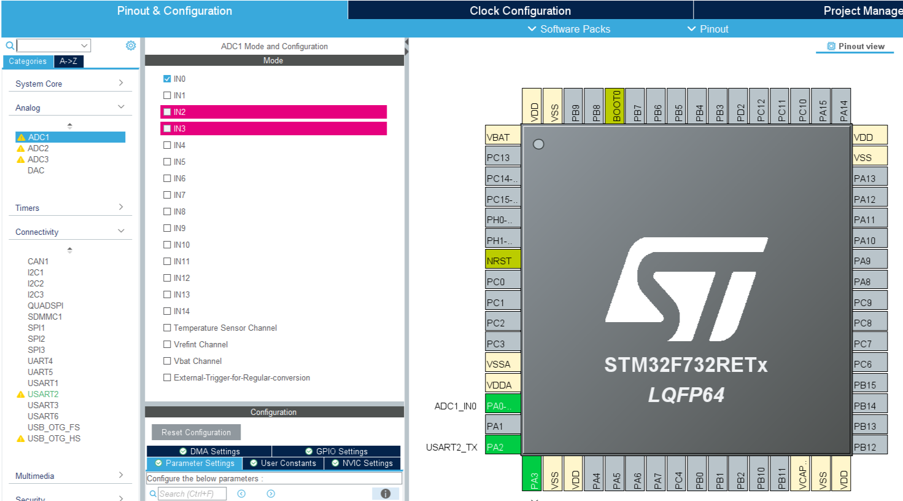
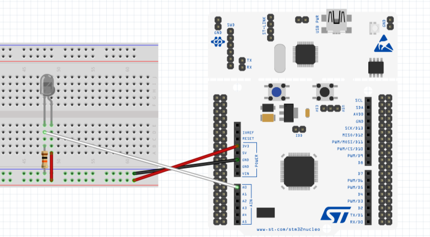

STM32資料 基礎編 5
赤外線を検出してみよう
赤外線は目には見えないが、制御や誘導などで非常に便利である
そこで今回は、フォトトランジスタとAD変換という手法を使って赤外線を検出してみよう
今回やること
作業の流れ
- ピンを割り当てる
- wrapper.cppにコードを書き込む
- フォトトランジスタとSTM32を配線でつなぐ
- STM32にプログラムを書き込み実行する
- 赤外線投光器を近づけて値を観察する
ピンの割り当て
今回はADCという機能を使います
(プロジェクト名).iocからPA0を選択し、ADC1_IN0を割り当てよう
左側のAnalogからADC1を選択し、IN0にチェックを入れよう
回路
フォトトランジスタとSTM32をジャンパー線を使ってつなぐ
回路が少し複雑なので、気を付けてつけてね
配線図
フォトトランジスタと10kΩの抵抗を使ってね
プログラム
今回はADCのスタートとストップ、変換待機と読み取りの4つの関数を使います
ADCのスタート
指定したADCを起動するための関数
HAL_ADC_Start(&hadcx);この関数の引数
| 引数名 | 変数型 | 内容 |
|---|---|---|
| &hadcx | ADC_HandleTypeDef* | ADCのポインタ（xはADCの番号） |
AD変換の待機
指定したADCを起動するための関数
HAL_ADC_PollForConversion(&hadcx, Time)この関数の引数
| 引数名 | 変数型 | 内容 |
|---|---|---|
| &hadcx | ADC_HandleTypeDef* | ADCのポインタ（xはADCの番号） |
| Time | uint32_t | 待機する最大時間 |
値の読み取り
変換した値を読み取るための関数
Value = HAL_ADC_GetValue(&hadcx);この関数の引数
| 引数名 | 変数型 | 内容 |
|---|---|---|
| &hadcx | ADC_HandleTypeDef* | ADCのポインタ（xはADCの番号） |
この関数の戻り値
| 戻り値名 | 変数型 | 内容 |
|---|---|---|
| Value | uint16_t | ADCをした値(0~4095) |
ADCのストップ
指定したADCを停止するための関数
HAL_ADC_Stop(&hadcx);この関数の引数
| 引数名 | 変数型 | 内容 |
|---|---|---|
| &hadcx | ADC_HandleTypeDef* | ADCのポインタ（xはADCの番号） |
サンプルコード
実際にAD変換を行い、その値をシリアル通信で送信するプログラムを作成した
蛍光灯や日光にあてて値の変化を読み取ってみよう
#include "wrapper.hpp"
#include "adc.h"
#include "usart.h"
#include "string"
uint16_t ADC_Value = 0;
void init(){
HAL_Delay(500);
}
void loop(){
//ADCのスタート
HAL_ADC_Start(&hadc1);
//変換を待機
if(HAL_ADC_PollForConversion(&hadc1, 1000) == HAL_OK ){
//値の読み取り
ADC_Value = HAL_ADC_GetValue(&hadc1);
//値の送信
std::string str = "ADC_Value:" + std::to_string(ADC_Value) + "\n";
HAL_UART_Transmit(&huart2, (uint8_t *)str.c_str(),str.length(),100);
}
//ADCのストップ
HAL_ADC_Stop(&hadc1);
//ちょっと待機
HAL_Delay(100);
}終わりに
今回は、AD変換を使って赤外線を読み取ってみた
色々な場面で使えるので、ぜひ覚えておこう